UDN
Search public documentation:
LandscapeMaterials
日本語訳
中国翻译
한국어
Interested in the Unreal Engine?
Visit the Unreal Technology site.
Looking for jobs and company info?
Check out the Epic games site.
Questions about support via UDN?
Contact the UDN Staff
中国翻译
한국어
Interested in the Unreal Engine?
Visit the Unreal Technology site.
Looking for jobs and company info?
Check out the Epic games site.
Questions about support via UDN?
Contact the UDN Staff
Landscape Materials
Overview
Landscape Material Creation
Layer Blending
The ability to blend layers is the basis for texturing Landscape terrains. This is similar to the way terrain systems have worked in Unreal in the past. However, the material side of the Landscape system is implemented differently. To setup the ability to blend layers of the Landscape together, a series of TerrainLayerWeight expressions is used. Each of these expressions must specify the name of the associated layer in the Landscape terrain in the Parameter Name property. For the first layer, you can leave the Base input blank, but for subsequent layers, connect the output of the first layer into the Base of the second layer, and so on. Under the hood, these nodes will behave like a Static Switch Parameter. Each component of the Landscape has its own MaterialInstanceConstant created from the main Landscape material which is applied to just that component. If a particular layer is not used on a particular landscape component, the sub-tree of nodes connected to the layer will be discarded. This reduces overall material complexity allowing the material applied to the Landscape to contain any number of texture samples as long as the number of samples being used on any individual component never exceeds the maximum set forth by the shader model specifications (16 for SM 3.0). This means it is possible to set up a master material which contains every texture or network used anywhere on the Landscape, which can end up being a very complex collection of networks, while still keeping the final materials applied to the components of the Landscape within the parameters allowed by the hardware. Below is a simple example material setup for blending the diffuse color for 4 layers of a Landscape. 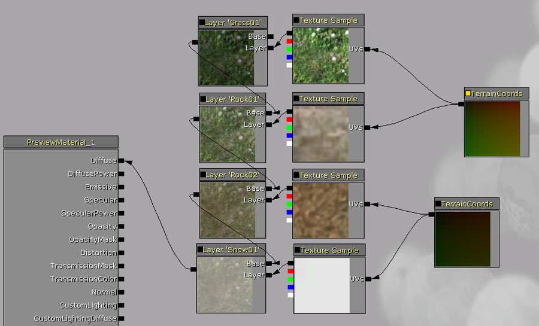 Note: You can preview effect of different weights on the material by changing the Preview Weight properties of the TerrainLayerWeight nodes. The TerrainLayerCoords node is used to specify the tiling, scale etc parameters for the Landscape layer's textures. Of course, any network of expressions can be connected to the Layer inputs in place of a simple TextureSample. This makes it possible to do more complex effects such as transitioning from detail textures to larger macro textures depending on the distance the layer is being viewed from. An alternative to this blending method is to use a LandscapeLayerBlend node (see below).Layer Weights and Ordering
Landscape uses weight blending rather than alpha blending, so the blend factors for all layers at any location will up to 1.0. This has the advantage that there is no order dependence - you can paint any layer at any time and its weight is increased and the other existing layers are decreased. A disadvantage is that when fully painting one layer to 100%, the weight value for all other layers will be 0%. This is evident when using the unpaint tool on a layer already at 100%. The tool doesn't know what other layers to replace the layer you are unpainting with.Landscape Material Expressions
Terrain Layer Weight
The TerrainLayerWeight expression allows material networks to be blended based on the weight for the associated layer obtained from the Landscape the material is aplied to. 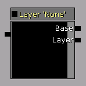 Properties- Parameter Name - The name of the layer belonging to the Landscape to be associated with this expression. The weight for this layer is used as the alpha value for blending the two input networks.
- Preview Weight - The weight to use for preview purposes in the Material Editor.
- Base - The network to blend the associate layer with. This is generally the result of any previous layer blending, but can be empty if this is the first layer.
- Layer - The network to blend in for the associated layer.
- Outputs the result of the blending between the Base and Layer inputs based on the layer weights of the layers involved.
Terrain Layer Coords
The TerrainLayerCoords expression generates UV coordinates that can be used to map material networks to Landscape terrains. 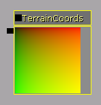 Properties- Mapping Type - The
ETerrainCoordMappingTypethat specifies the orientation to use when mapping the material (or network) to the Landscape. - Mapping Scale - The uniform scaling to apply to the UV coordinates.
- Mapping Rotation - The rotation, in degrees, to apply to the UV coordinates.
- Mapping Pan [U/V] - The offset in the [U/V] direction to apply to the UV coordinates.
- Outputs the UV coordinates to map the material to the Landscape based on the given property values.
Terrain Layer Switch
(Available starting from the October 2011 build) TerrainLayerSwitch allows you to exclude some material operations when a particular layer is not contributing to a region of the landscape. This allows you to optimize your material by removing calculations that are not necessary when a particular layer's weight is zero. 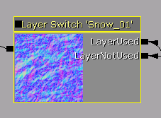 Inputs- LayerUsed - the result to use when the layer specified in the node's Properties is in use by the current region of the landscape.
- LayerNotUsed - the result to use when the layer is not used by the current region of the landscape and has a weight of zero.
- Either the LayerUsed or LayerNotUsed inputs, depending on whether or not the layer contributes to the particular region of the landscape.
Landscape Layer Blend
(Available starting from the October 2011 build) As an alternative to manually blending layers together with the TerrainLayerWeight node, The LandscapeLayerBlend node blends multiple layers together using either alpha blending or alpha blending with a height-based offset. The height-based offset allows a layer to blend with other layers based on a heightmap input. In regions where certain layers are not used, the layers are automatically optimized away and do not contribute to the shader. 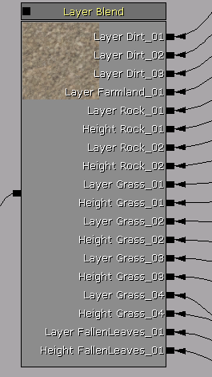 Inputs- Each layer adds an input for the layer to blend together.
- LB_HeightBlend blended layers (see below) also have a height input.
- The result of the layers blended together.
- Layer Name - This corresponds to the layer name used in the Landscape edit mode window.
- Blend Type - Either LB_AlphaBlend or LB_HeightBlend. These are described below.
- Preview Weight - This is used as the weight value for the layer to preview the blending in the material editor.
Note about multiple LB_HeightBlend layers
LB_HeightBlend works by modulating the blend factor (weight) for the layer using the specified height value. Because all the weights must add up to 1.0, the other layers that are also painted will have their weights boosted to compensate. When you have multiple layers painted on an area and they all LB_HeightBlend, it's possible that all the layers painted in a particular area will simultaneously have a 0 height value, so the desired blend factor for each layer becomes 0. Because there is no implicit or explicit ordering, the result will be black spots because no layers will have any contribution. The situation is worse when you're blending a normal map, because it results in a normal value of (0,0,0) which is not valid and will cause math problems with the lighting. The solution to this problem is to use LB_AlphaBlend for one of the layers. In this case there will always be a non-zero blend factor available. 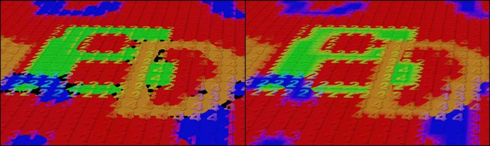 In the left image, all layers are LB_HeightBlend, causing some areas to be black. On the right, the red "1" layer has been changed to use LB_AlphaBlend, which solves the problem.Geometry Normal Map
NOTE: from the May 2011 Build onwards, the geometry normal map is automatically sampled per-pixel and does not require any extra nodes in material to achieve LOD-independent high-resolution lighting. The information below is only necessary if using a build before May 2011. When upgrading to May 2011 or later, be sure to remove the Heightmap sampling nodes from any Landscape materials. By sampling the heightmap texture in the material, you can access the geometry normal information per-pixel. This gives consistent, high resolution lighting even when the Landscape is LOD'd out in the distance. 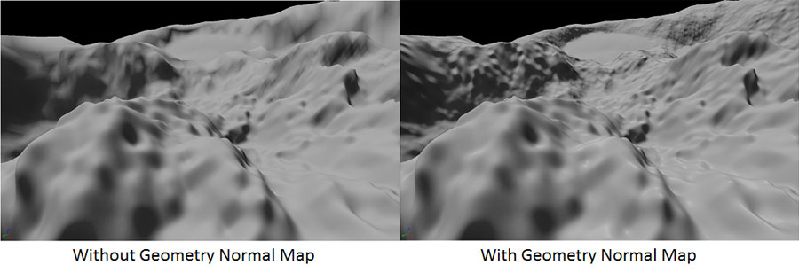 Landscape assigns the heightmap texture as a parameter named Heightmap. The geometry normal map is stored as a world-space normal vector with X and Y components stored in the Blue and Alpha channels of the heightmap texture. We need to use a few material nodes to generate the Z component, correctly bias it and then transform from World to Component space before we can use it as a normal map. The nodes to do that are shown below. There is an example of this in the LandscapeLightingMaterial material in the Engine\Content\EditorLandscapeResources.upk package. 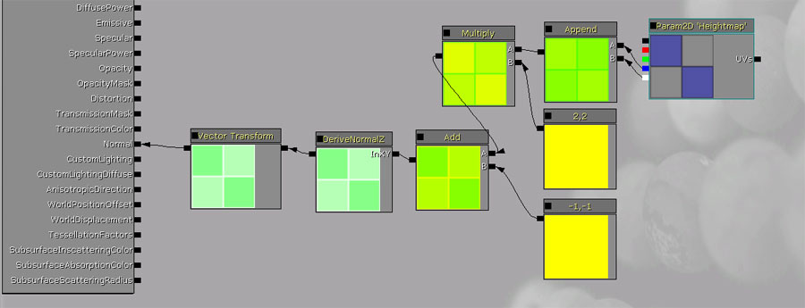 You can use a similar layer blending structure to the one shown previously connected to the Normal input setup to blend normal maps for multiple layers as well as the geometry normal map together.Tessellation and Displacement
The TessellationFactors and WorldDisplacement channels of the material can be used in conjunction with Landscape terrains to provide additional detail and deformation. These work exactly as they would with any other standard material and the layer blending can be used in conjunction with these just as with the Diffuse, Normal, or any other channel.Assigning Materials to Landscapes
Landscape Material property in the Landscape category. Simply select the material in the Content Browser and then press the  button to assign the material.
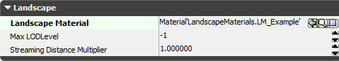
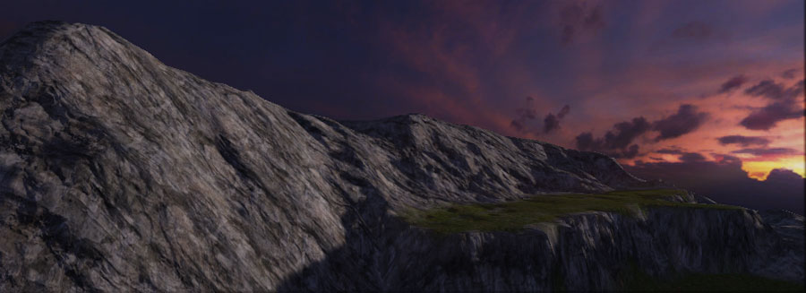
button to assign the material.
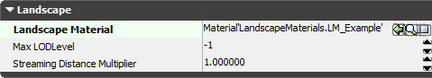
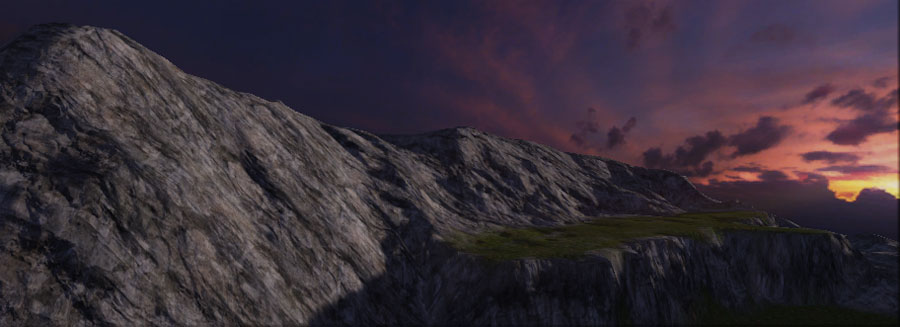